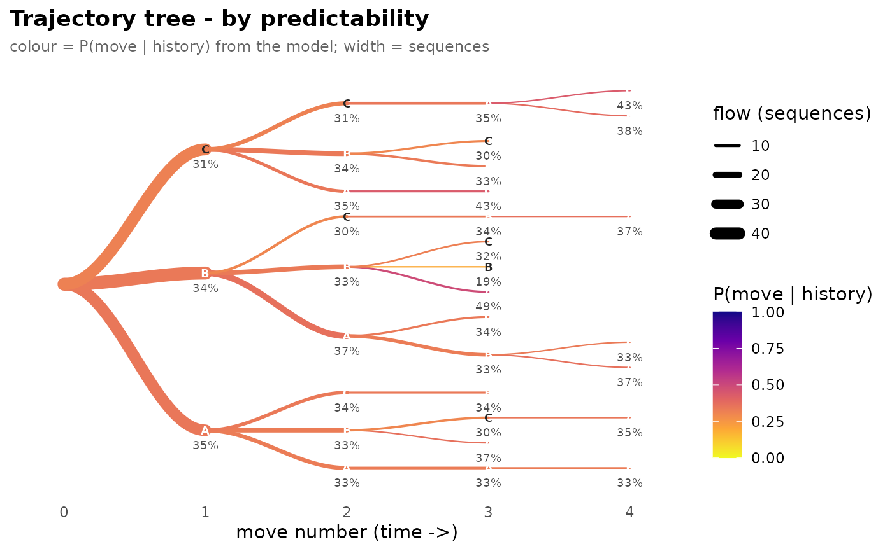

Where plot.transitiontrees draws the fitted context tree
backwards (each node is a suffix, the most-recent move), this
draws the same prompts forwards: a prefix tree that starts at a
common root and follows each sequence move by move in time. The one
tree can be coloured two ways:
measure = "frequency"node and edge colour and width encode how many sequences walk each path.
measure = "predictability"colour encodes \(P(\text{move} \mid \text{history})\) from the model (
tree); edge width still encodes flow.
Higher values are drawn darker.
Usage
plot_trajectories(
tree,
measure = c("frequency", "predictability"),
min_count = 4L
)Details
The predictability of a node's last move is the model's conditional
probability of that move given the preceding history, truncated to the
tree's max_depth and read via query_pathway()
(the empty history for a first move uses the root distribution). This
is the forward-reading complement to the backward context tree; it is
a visualisation, so it depends on ggforce (in Suggests) for the
rounded node glyphs and errors with an install hint if it is missing.
See also
plot.transitiontrees for the backward context
tree, plot_pruning for the suffix-chain view.
Examples
# \donttest{
seqs <- replicate(120, sample(c("A", "B", "C"), 8, replace = TRUE),
simplify = FALSE)
tree <- context_tree(seqs, max_depth = 3L, min_count = 3L)
pruned <- prune_tree(tree)
if (requireNamespace("ggforce", quietly = TRUE)) {
plot_trajectories(tree, measure = "frequency")
plot_trajectories(pruned, measure = "predictability")
}

# }